章节1 简介
1.1 关于
Box2D 是一个用于游戏的 2D 刚体模拟库。 程序员可以在他们的游戏中使用它来使对象以逼真的方式移动，并使游戏世界更具交互性。 从游戏引擎的角度来看，物理引擎只是一个程序动画系统。
Box2D 是用可移植的 C++ 编写的。 引擎中定义的大多数类型都以 b2 前缀开头。 希望这足以避免名称与您的游戏引擎发生冲突。
1.2 声明
在本手册中，我假设您熟悉基本的物理概念，例如质量、力、扭矩和冲量。 如果没有，请先咨询谷歌搜索和维基百科。
Box2D 是在游戏开发者大会上作为物理教程的一部分创建的。 您可以从 box2d.org 的下载部分获取这些教程。
由于 Box2D 是用 C++ 编写的，因此您应该具备 C++ 编程经验。 Box2D 不应该是您的第一个 C++ 编程项目！ 您应该熟悉编译、链接和调试。
警告
Box2D 不应该是您的第一个 C++ 项目。 在使用 Box2D 之前，请先学习 C++ 编程、编译、链接和调试。 网上有很多这方面的资源。.
1.3 关于本手册
本手册涵盖了 Box2D API 的大部分内容。 但是，并非涵盖所有方面。 我们鼓励您查看 Box2D 附带的测试平台以了解更多信息。 此外，Box2D 代码库具有针对 Doxygen 格式化的注释，因此很容易创建超链接 API 文档。
本手册仅随新版本更新。 源代码管理中的版本可能已过时。
1.4 反馈和报告错误
如果您对 Box2D 有任何问题或反馈，请在论坛中发表评论。 这也是社区讨论的好地方。
Box2D 问题使用 Google 代码项目进行跟踪。 这是跟踪问题并确保您的问题不会在论坛深处丢失的好方法。
请在此处提交错误和功能请求：http://code.google.com/p/box2d/
如果您提供足够的详细信息，您可以帮助确保您的问题得到解决。 重现问题的测试平台示例是理想的。 您可以在本文档后面阅读有关测试平台的信息。
1.5 核心概念
Box2D 与几个基本概念和对象一起工作。 我们在这里简要定义了这些对象，更多细节在本文档后面给出。
Shape
Shape是2D几何对象，例如圆形或者多边形。
rigid body
一块如此坚固的物质，以至于该块上任何两块物质之间的距离都是恒定的。 它们像钻石一样坚硬。 在下面的讨论中，我们将 body 与刚体互换使用。
fixture
夹具将形状绑定到实体并添加材料属性，例如密度、摩擦力和恢复力。 夹具将形状放入碰撞系统（宽相位），以便它可以与其他形状发生碰撞。
constraint
约束是一种物理连接，它消除了物体的自由度。 一个 2D 物体有 3 个自由度（两个平移坐标和一个旋转坐标）。 如果我们将一个物体固定在墙上（如钟摆），我们将物体约束在墙上。 此时主体只能绕销旋转，因此约束已移除 2 个自由度。
contact constraint
一种特殊约束，旨在防止刚体穿透并模拟摩擦和恢复。 您不创建接触约束； 它们由 Box2D 自动创建。
joint
这是用于将两个或多个实体保持在一起的约束。 Box2D 支持多种关节类型：旋转、棱柱、距离等。 一些关节可能有限制和马达。
joint limit
关节限制限制了关节的运动范围。 例如，人的肘部只允许一定范围的角度。
joint motor
关节电机根据关节的自由度驱动连接体的运动。 例如，您可以使用电机来驱动肘部旋转。
world
物理世界是相互作用的物体、固定装置和约束的集合。 Box2D 支持创建多个世界，但这通常不是必需的或不可取的。
solver
物理世界有一个solver，用于推进时间并解决接触和关节约束。 Box2D solver是一种高性能迭代求解器，按 N 次运行，其中 N 是约束的数量。
continuous collision
solver使用离散时间步长在时间上推进物体。 如果没有干预，这可能会导致隧道效应。

Box2D 包含专门的算法来处理隧道。 首先，碰撞算法可以对两个物体的运动进行插值，以找到第一次碰撞 (TOI)。 其次，有一个分步求解器将物体移动到它们的第一次撞击，然后解决碰撞。
1.6 模块
Box2D由三个模块组成：Common、Collision和Dynamics。 公共模块具有分配、数学和设置的代码。 碰撞模块定义形状、宽相位和碰撞函数/查询。 最后，Dynamics 模块提供了模拟世界、实体、夹具和关节。

1.7 单位
Box2D 与浮点数一起工作，必须使用容差才能使 Box2D 表现良好。 这些公差已经过调整，可以很好地与米-千克-秒 (MKS) 单位配合使用。 特别是，Box2D 已经过调整，可以很好地处理 0.1 到 10 米之间的移动形状。 所以这意味着汤罐和公共汽车之间的物体大小应该可以正常工作。 静态形状最长可达 50 米，没有任何问题。
作为 2D 物理引擎，使用像素作为单位是很诱人的。 不幸的是，这将导致不良的模拟和可能的奇怪行为。 Box2D 会将长度为 200 像素的对象视为 45 层建筑的大小。
警告
Box2D 针对 MKS 单元进行了调整。 将移动物体的大小保持在大约 0.1 到 10 米之间。 渲染环境和演员时，您需要使用一些缩放系统。 Box2D 测试台通过使用 OpenGL 视口变换来实现这一点。 不要使用像素。
最好将 Box2D 实体视为移动的广告牌，您可以在其上附加您的作品。 广告牌可能以米为单位移动，但您可以使用简单的比例因子将其转换为像素坐标。 然后，您可以使用这些像素坐标来放置您的精灵等。您还可以考虑翻转坐标轴。
Box2D 使用弧度表示角度。 身体旋转以弧度存储，并且可以无限增长。 如果角度的大小变得太大，请考虑对身体的角度进行归一化（使用 b2Body::SetAngle）。
警告
Box2D 使用的是弧度，而不是度数。
1.8 工厂和定义
快速内存管理在 Box2D API 的设计中起着核心作用。 所以当你创建一个 b2Body 或一个 b2Joint 时，你需要调用 b2World 上的工厂函数。 您永远不应该尝试以其他方式分配这些类型。
有创建函数：
b2Body* b2World::CreateBody(const b2BodyDef* def)
b2Joint* b2World::CreateJoint(const b2JointDef* def)
并且有对应的销毁函数：
void b2World::DestroyBody(b2Body* body)
void b2World::DestroyJoint(b2Joint* joint)
创建实体或关节时，需要提供定义。 这些定义包含构建身体或关节所需的所有信息。 通过使用这种方法，我们可以防止构造错误，保持函数参数的数量较少，提供合理的默认值，并减少访问器的数量。
由于fixtures（shapes）必须是body的父对象，所以它们是使用b2Body上的工厂方法创建和销毁的：
b2Fixture* b2Body::CreateFixture(const b2FixtureDef* def)
void b2Body::DestroyFixture(b2Fixture* fixture)
还有直接从形状和密度创建fixture的捷径。
b2Fixture* b2Body::CreateFixture(const b2Shape* shape, float32 density)
工厂不保留对定义的引用。 因此，您可以在堆栈上创建定义并将它们保存在临时资源中。
章节2 Hello Box2D
在 Box2D 的发行版中是一个 Hello World 项目。 该程序创建了一个大的地面盒子和一个小的动态盒子。 此代码不包含任何图形。 随着时间的推移，您将看到的只是框位置的控制台中的文本输出。
这是一个很好的例子，说明如何使用 Box2D 启动和运行。
2.1 创建World
每个 Box2D 程序都从创建 b2World 对象开始。 b2World 是管理内存、对象和模拟的物理中心。 您可以在堆栈、堆或数据部分分配物理世界。
创建 Box2D 世界很容易。 首先，我们定义重力矢量。
b2Vec2 gravity(0.0f, -10.0f);
现在我们创建世界对象。 请注意，我们正在堆栈上创建世界，因此世界必须保持在范围内。
b2World world(gravity);
所以现在我们有了我们的物理世界，让我们开始向它添加一些东西。
2.2 创建Ground Box
使用以下步骤构建主体：
1.定义具有位置、阻尼等的物体。
2.使用世界对象创建身体。
3.定义具有形状、摩擦力、密度等的夹具。
4.在车身上创建固定装置。
对于第 1 步，我们创建地面主体。 为此，我们需要一个主体定义。 通过body定义，我们指定了ground body的初始位置。
b2BodyDef groundBodyDef;
groundBodyDef.position.Set(0.0f, -10.0f);
对于第 2 步，将主体定义传递给世界对象以创建地面主体。 世界对象不保留对主体定义的引用。 默认情况下，实体是静态的。 静态物体不会与其他静态物体发生碰撞并且是不可移动的。
b2Body* groundBody = world.CreateBody(&groundBodyDef);
对于第 3 步，我们创建一个地面多边形。 我们使用 SetAsBox 快捷方式将地面多边形形成一个盒子形状，盒子以父体的原点为中心。
b2PolygonShape groundBox;
groundBox.SetAsBox(50.0f, 10.0f);
SetAsBox 函数采用半宽和半高（范围）。所以在这种情况下，地面盒的宽度为 100 个单位（x 轴），高度为 20 个单位（y 轴）。 Box2D 针对米、千克和秒进行了调整。因此，您可以考虑以米为单位的范围。 Box2D 通常在对象与典型现实世界对象大小相同时效果最佳。例如，一个桶大约有 1 米高。由于浮点运算的限制，使用 Box2D 来模拟冰川或尘埃颗粒的运动并不是一个好主意。
我们通过创建形状夹具在步骤 4 中完成地面主体。对于这一步，我们有一个快捷方式。我们不需要更改默认的夹具材料属性，因此我们可以直接将形状传递给主体，而无需创建夹具定义。稍后我们将看到如何为自定义材料属性使用夹具定义。第二个参数是以千克每平方米为单位的形状密度。根据定义，静态物体的质量为零，因此在这种情况下不使用密度。
groundBody->CreateFixture(&groundBox, 0.0f);
Box2D 不保留对形状的引用。 它将数据克隆到一个新的 b2Shape 对象中。
请注意，每个夹具都必须有一个父体，即使是静态的夹具。 但是，您可以将所有静态装置附加到单个静态主体。
当您使用夹具将形状附加到身体时，形状的坐标将成为身体的局部坐标。 因此，当身体移动时，形状也会移动。 夹具的世界变换是从父体继承的。 固定装置没有独立于主体的变换。 所以我们不会在身体上移动一个形状。 不支持移动或修改实体上的形状。 原因很简单：具有变形形状的物体不是刚体，但 Box2D 是刚体引擎。 Box2D 中的许多假设都是基于刚体模型。 如果违反这一点，很多事情都会崩溃。
2.3 创建Dynamic Body
所以现在我们有了一个接地体。 我们可以使用相同的技术来创建动态主体。 除了尺寸之外，主要区别在于我们必须建立动态物体的质量属性。
首先，我们使用 CreateBody 创建主体。 默认情况下，body 是静态的，所以我们应该在构造时设置 b2BodyType 以使 body 动态。
b2BodyDef bodyDef;
bodyDef.type = b2_dynamicBody;
bodyDef.position.Set(0.0f, 4.0f);
b2Body* body = world.CreateBody(&bodyDef);
我们能否打开手机发
警告
如果您希望身体响应力而移动，则必须将身体类型设置为 b2_dynamicBody。
接下来，我们使用夹具定义创建并附加多边形形状。 首先我们创建一个盒子形状：
b2PolygonShape dynamicBox;
dynamicBox.SetAsBox(1.0f, 1.0f);
接下来我们使用盒子创建一个夹具定义。 请注意，我们将密度设置为 1。默认密度为零。 此外，形状上的摩擦力设置为 0.3。
b2FixtureDef fixtureDef;
fixtureDef.shape = &dynamicBox;
fixtureDef.density = 1.0f;
fixtureDef.friction = 0.3f;
警告
一个动态物体应该至少有一个具有非零密度的夹具。 否则你会得到奇怪的行为。
使用夹具定义，我们现在可以创建夹具。 这会自动更新身体的质量。 您可以向主体添加任意数量的固定装置。 每一个都对总质量有贡献。
body->CreateFixture(&fixtureDef);
这就是初始化。 我们现在准备开始模拟。
2.4 模拟世界（Box2D）
所以我们已经初始化了ground box和一个动态box。 现在我们已经准备好放开牛顿去做他的事了。 我们还有几个问题需要考虑。
Box2D 使用一种称为积分器的计算算法。 积分器在离散时间点模拟物理方程。 这与传统的游戏循环相吻合，我们在屏幕上基本上有一本翻书。 所以我们需要为 Box2D 选择一个时间步长。 通常，游戏的物理引擎喜欢时间步长，至少快 60Hz 或 1/60 秒。 您可以使用更大的时间步长，但您必须更加小心地为您的世界设置定义。 我们也不喜欢时间步改变太多。 可变的时间步长会产生可变的结果，这使得调试变得困难。 所以不要将时间步与你的帧速率联系起来（除非你真的，真的必须）。 事不宜迟，这里是时间步长。
float32 timeStep = 1.0f / 60.0f;
除了积分器，Box2D 还使用了一个更大的代码位，称为约束求解器。约束求解器一次求解模拟中的所有约束。一个单一的约束就可以完美解决。但是，当我们解决一个约束时，我们会稍微破坏其他约束。为了得到一个好的解决方案，我们需要多次迭代所有约束。
约束求解器有两个阶段：速度阶段和位置阶段。在速度阶段，求解器计算物体正确移动所需的冲量。在位置阶段，求解器调整实体的位置以减少重叠和关节脱离。每个阶段都有自己的迭代次数。此外，如果误差很小，位置阶段可能会提前退出迭代。
Box2D 的建议迭代次数是速度为 8 次，位置为 3 次。您可以根据自己的喜好调整此数字，但请记住，这需要在性能和准确性之间进行权衡。使用更少的迭代可以提高性能，但准确性会受到影响。同样，使用更多迭代会降低性能，但会提高模拟质量。对于这个简单的例子，我们不需要太多的迭代。这是我们选择的迭代次数。
int32 velocityIterations = 6;
int32 positionIterations = 2;
请注意，时间步长和迭代次数完全不相关。 迭代不是子步骤。 一次求解器迭代是在一个时间步内单次遍历所有约束。 您可以在单个时间步内多次通过约束。
我们现在准备开始模拟循环。 在您的游戏中，模拟循环可以与您的游戏循环合并。 在每次通过游戏循环时，您调用 b2World::Step。 通常只需一个调用就足够了，具体取决于您的帧速率和物理时间步长。
Hello World 程序设计得很简单，因此它没有图形输出。 代码打印出动态体的位置和旋转。 这是模拟 60 个时间步长的模拟循环，模拟时间总共为 1 秒。
for (int32 i = 0; i < 60; ++i)
{
world.Step(timeStep, velocityIterations, positionIterations);
b2Vec2 position = body->GetPosition();
float32 angle = body->GetAngle();
printf("%4.2f %4.2f %4.2f\n", position.x, position.y, angle);
}
输出显示盒子掉落并降落在地面盒子上。 您的输出应如下所示：
0.00 4.00 0.00
0.00 3.99 0.00
0.00 3.98 0.00
...
0.00 1.25 0.00
0.00 1.13 0.00
0.00 1.01 0.00
2.5 Cleanup
当一个世界离开作用域或通过在指针上调用 delete 被删除时，为实体、固定装置和关节保留的所有内存都将被释放。 这样做是为了提高性能并使您的生活更轻松。 但是，您需要使您拥有的任何主体、夹具或关节指针无效，因为它们将变得无效。
2.6 The Testbed
一旦你征服了 HelloWorld 示例，你应该开始查看 Box2D 的测试平台。 测试平台是一个单元测试框架和演示环境。 以下是一些功能：
•带有平移和缩放功能的相机。
•鼠标拾取附加到动态物体的形状。
• 可扩展的测试集。
•用于选择测试、参数调整和调试绘图选项的GUI。
•暂停和单步模拟。
•文本渲染。

测试平台在测试用例和框架本身中有许多 Box2D 使用示例。 我鼓励您在学习 Box2D 时探索和修改测试平台。
注意：测试平台是使用 freeglut 和 GLUI 编写的。 测试台不是 Box2D 库的一部分。 Box2D 库与渲染无关。 如 HelloWorld 示例所示，您不需要渲染器即可使用 Box2D。
章节3 Common
3.1 关于
Common 模块包含设置、内存管理和向量数学。
3.2 设置
标头b2Settings.h包含：
l int32和float32等类型
l 常数 Contants
l Allocation Wrappers
l 版本号
Types
Box2D 定义了各种类型，例如 float32、int8 等，以便于确定结构的大小。
Constants
Box2D 定义了几个常量。 这些都记录在 b2Settings.h 中。 通常不需要调整这些常数。
Box2D 使用浮点数学进行碰撞和模拟。 由于舍入误差，定义了一些数值公差。 有些公差是绝对的，有些是相对的。 绝对公差使用 MKS 单位。
Allocation wrappers
设置文件为大分配定义了 b2Alloc 和 b2Free。 您可以将这些调用转发到您自己的内存管理系统。
Version
b2Version 结构保存当前版本，因此您可以在运行时查询它。
3.3 内存管理
大量有关 Box2D 设计的决定都是基于快速有效地使用内存的需要。在本节中，我将讨论 Box2D 如何以及为什么分配内存。
Box2D 倾向于分配大量的小对象（大约 50-300 字节）。通过 malloc 或 new 对小对象使用系统堆效率低下，并且可能导致碎片。许多这些小对象的寿命可能很短，例如联系人，但可以持续几个时间步长。所以我们需要一个能够有效地为这些对象提供堆内存的分配器。
Box2D 的解决方案是使用称为 b2BlockAllocator 的小型对象分配器 (SOA)。 SOA 保留了许多不同大小的可增长池。当请求内存时，SOA 会返回最适合请求大小的内存块。当一个块被释放时，它会返回到池中。这两种操作都很快，并且几乎没有堆流量。
由于 Box2D 使用 SOA，因此您永远不应该新建或分配主体、固定装置或关节。但是，您必须自己分配一个 b2World。 b2World 类为您提供了创建实体、固定装置和关节的工厂。这允许 Box2D 使用 SOA 并对您隐藏血腥细节。永远不要对身体、固定装置或关节调用 delete 或 free。
在执行时间步时，Box2D 需要一些临时工作空间内存。为此，它使用称为 b2StackAllocator 的堆栈分配器来避免每一步的堆分配。您不需要与堆栈分配器进行交互，但很高兴知道它在那里。
3.4 Math
Box2D 包含一个简单的小向量和矩阵模块。 这是为了满足 Box2D 和 API 的内部需求而设计的。 所有成员都是公开的，因此您可以在应用程序中自由使用它们。
数学库保持简单，使 Box2D 易于移植和维护。
章节4 Collision Module
4.1 关于
碰撞模块（Collision Module）包含对其进行操作的形状和函数。 该模块还包含动态树和大系统加速碰撞处理的广泛阶段。
碰撞模块设计为可在动态系统之外使用。 例如，除了物理之外，您还可以将动态树用于游戏的其他方面。
但是，Box2D 的主要目的是提供一个刚体物理引擎，因此对于某些应用程序，单独使用碰撞模块可能会感觉受到限制。 同样，我不会努力记录它或完善 API。
4.2 Shapes
形状描述了碰撞几何，可以独立于物理模拟使用。至少，您应该了解如何创建以后可以附加到刚体的形状。
Box2D 形状实现了 b2Shape 基类。基类将函数定义为：
•测试与形状重叠的点。
•对形状执行射线投射。
•计算形状的AABB。
•计算形状的质量属性。
此外，每个形状都有一个类型成员和一个半径。半径甚至适用于多边形，如下所述。
请记住，形状不了解物体，并且与动力学系统不同。形状以紧凑的形式存储，针对尺寸和性能进行了优化。因此，形状不容易移动。您必须手动设置形状顶点位置才能移动形状。然而，当使用固定装置将形状连接到主体时，形状会随着主体刚性移动。总之：
•当形状未附加到实体时，您可以将其顶点视为在世界空间中表达。
•当一个形状附加到一个实体上时，您可以查看它的顶点以用局部坐标表示。
Circle Shapes
圆形具有位置和半径。 圆圈是实心的。 您不能使用圆形制作空心圆形。
b2CircleShape circle;
circle.m_p.Set(2.0f, 3.0f);
circle.m_radius = 0.5f;
PolygonShapes
多边形形状（Polygon Shapes）是实心凸多边形。 当连接内部两点的所有线段不穿过多边形的任何边缘时，多边形是凸的。 多边形是实心的，绝不是空心的。 多边形必须有 3 个或更多顶点。
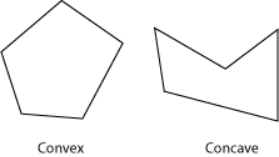
多边形顶点以逆时针缠绕 (CCW) 的方式存储。 我们必须小心，因为 CCW 的概念是关于右手坐标系的，z 轴指向平面外。 这可能会在您的屏幕上显示为顺时针方向，具体取决于您的坐标系约定。
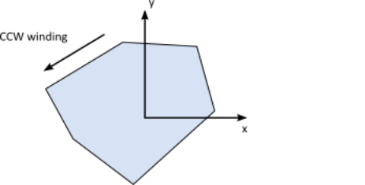
多边形成员是公共的，但您应该使用初始化函数来创建多边形。 初始化函数创建法线向量并执行验证。
您可以通过传入顶点数组来创建多边形形状。 数组的最大大小由 b2_maxPolygonVertices 控制，默认值为 8。这足以描述大多数凸多边形。
b2PolygonShape::Set 函数自动计算凸包并建立正确的缠绕顺序。 当顶点数量较少时，此功能很快。 如果增加 b2_maxPolygonVertices，则凸包计算可能会变慢。 另请注意，凸包函数可能会消除和/或重新排序您提供的点。 可以合并比 b2_linearSlop 更近的顶点。
// This defines a triangle in CCW order.
b2Vec2 vertices[3];
vertices[0].Set(0.0f, 0.0f);
vertices[1].Set(1.0f, 0.0f);
vertices[2].Set(0.0f, 1.0f);
int32 count = 3;
b2PolygonShape polygon;
polygon.Set(vertices, count);
多边形形状有一些方便的功能来创建盒子。
void SetAsBox(float32 hx, float32 hy);
void SetAsBox(float32 hx, float32 hy, const b2Vec2& center, float32 angle);
多边形从 b2Shape 继承半径。 半径在多边形周围创建一个蒙皮。 皮肤用于堆叠场景以保持多边形略微分离。 这允许连续碰撞对核心多边形起作用。
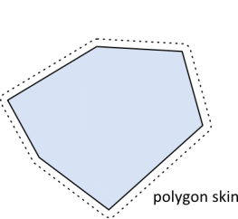
多边形皮肤通过保持多边形分离来帮助防止隧道。 这导致形状之间的小间隙。 您的视觉表示可以大于多边形以隐藏任何间隙。
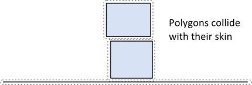
Edge Shapes
边缘形状是线段。 提供这些是为了帮助为您的游戏制作一个自由形式的静态环境。 边缘形状的一个主要限制是它们可以与圆形和多边形碰撞，但不能与自身碰撞。 Box2D 使用的碰撞算法要求两个碰撞形状中的至少一个具有体积。 边缘形状没有体积，因此边缘边缘碰撞是不可能的。
// This an edge shape.
b2Vec2 v1(0.0f, 0.0f);
b2Vec2 v2(1.0f, 0.0f);
b2EdgeShape edge;
edge.Set(v1, v2);
在许多情况下，游戏环境是通过端到端连接多个边缘形状来构建的。 当多边形沿边链滑动时，这可能会导致意外的伪影。 在下图中，我们看到一个与内部顶点碰撞的盒子。 当多边形与内部顶点碰撞产生内部碰撞法线时，会导致这些重影碰撞。
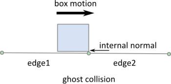
如果 edge1 不存在，这种碰撞似乎很好。 存在 edge1 时，内部碰撞似乎是一个错误。 但通常当 Box2D 碰撞两个形状时，它会孤立地查看它们。
幸运的是，边缘形状提供了一种通过存储相邻的幻影顶点来消除幻影碰撞的机制。 Box2D 使用这些幻影顶点来防止内部碰撞。
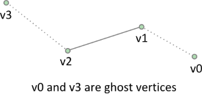
// This is an edge shape with ghost vertices.
b2Vec2 v0(1.7f, 0.0f);
b2Vec2 v1(1.0f, 0.25f);
b2Vec2 v2(0.0f, 0.0f);
b2Vec2 v3(-1.7f, 0.4f);
b2EdgeShape edge;
edge.Set(v1, v2);
edge.m_hasVertex0 = true;
edge.m_hasVertex3 = true;
edge.m_vertex0 = v0;
edge.m_vertex3 = v3;
一般来说，以这种方式将边缘缝合在一起有点浪费和乏味。 这给我们带来了链形。
Chain Shapes
链形提供了一种将许多边连接在一起以构建静态游戏世界的有效方式。 链形自动消除重影碰撞并提供两侧碰撞。
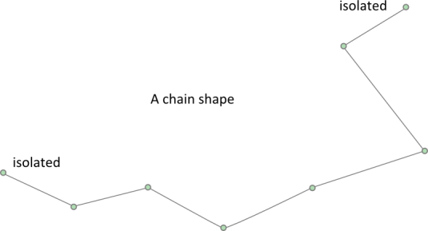
// This a chain shape with isolated vertices
b2Vec2 vs[4];
vs[0].Set(1.7f, 0.0f);
vs[1].Set(1.0f, 0.25f);
vs[2].Set(0.0f, 0.0f);
vs[3].Set(-1.7f, 0.4f);
b2ChainShape chain;
chain.CreateChain(vs, 4);
您可能有一个滚动的游戏世界，并希望将多个链连接在一起。 您可以使用幻影顶点将链连接在一起，就像我们对 b2EdgeShape 所做的那样。
// Install ghost vertices
chain.SetPrevVertex(b2Vec2(3.0f, 1.0f));
chain.SetNextVertex(b2Vec2(-2.0f, 0.0f));
您也可以自动创建循环。
// Create a loop. The first and last vertices are connected.
b2ChainShape chain;
chain.CreateLoop(vs, 4);
不支持链形状的自相交。 它可能有效，也可能无效。 防止重影碰撞的代码假定链没有自相交。 此外，非常接近的顶点可能会导致问题。 确保所有边缘都长于 b2_linearSlop (5mm)。
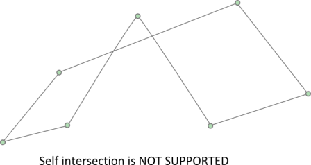
链中的每条边都被视为子形状，可以通过索引访问。 当链形连接到主体时，每条边在宽相碰撞树中都有自己的边界框。
// Visit each child edge.
for (int32 i = 0; i < chain.GetChildCount(); ++i)
{
b2EdgeShape edge;
chain.GetChildEdge(&edge, i);
…
}
4.3 一元几何查询
您可以对单个形状执行几个几何查询。
Shape Point Test
您可以测试一个点是否与形状重叠。 您为形状和世界点提供变换。
b2Transfrom transform;
transform.SetIdentity();
b2Vec2 point(5.0f, 2.0f);
bool hit = shape->TestPoint(transform, point);
边缘和链形状总是返回 false，即使链是循环。
Shape Ray Cast
您可以将光线投射到某个形状上，以获得第一个交点和法向量。 如果光线从形状内部开始，则不会记录任何命中。 链形状包含子索引，因为光线投射一次只会检查一条边。
b2Transfrom transform;
transform.SetIdentity();
b2RayCastInput input;
input.p1.Set(0.0f, 0.0f, 0.0f);
input.p2.Set(1.0f, 0.0f, 0.0f);
input.maxFraction = 1.0f;
int32 childIndex = 0;
b2RayCastOutput output;
bool hit = shape->RayCast(&output, input, transform, childIndex);
if (hit)
{
b2Vec2 hitPoint = input.p1 + output.fraction * (input.p2 �C input.p1);
…
}
4.4 Binary Functions
Collision 模块包含双边函数，它们采用一对形状并计算一些结果。 这些包括：
l ·重叠
l ·接触歧管
l ·距离
l · 影响时间
Overlap
您可以使用此函数测试两个形状的重叠：
b2Transform xfA = …, xfB = …;
bool overlap = b2TestOverlap(shapeA, indexA, shapeB, indexB, xfA, xfB);
您可以使用此功能测试两个形状是否重叠：同样，您必须为链形状的情况提供子索引。
Contact Manifolds
Box2D 具有计算重叠形状的接触点的功能。 如果我们考虑圆-圆或圆-多边形，我们只能得到一个接触点和法线。 在多边形-多边形的情况下，我们可以得到两个点。 这些点共享相同的法线向量，因此 Box2D 将它们分组为流形结构。 接触求解器利用这一点来提高堆叠稳定性。
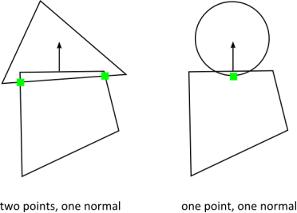
通常您不需要直接计算接触流形，但是您可能会使用模拟中产生的结果。
b2Manifold 结构包含一个法线向量和最多两个接触点。 法线和点保存在本地坐标中。 为了方便接触求解器，每个点都存储法向和切向（摩擦）脉冲。
存储在 b2Manifold 中的数据已针对内部使用进行了优化。 如果需要这些数据，通常最好使用 b2WorldManifold 结构来生成接触法线和点的世界坐标。 您需要提供 b2Manifold 以及形状变换和半径。
b2WorldManifold worldManifold;
worldManifold.Initialize(&manifold, transformA, shapeA.m_radius,
transformB, shapeB.m_radius);
for (int32 i = 0; i < manifold.pointCount; ++i)
{
b2Vec2 point = worldManifold.points[i];
…
}
请注意，世界流形使用原始流形的点数。
在模拟过程中，形状可能会移动，歧管可能会发生变化。 可以添加或删除点。 您可以使用 b2GetPointStates 检测到这一点。
b2PointState state1[2], state2[2];
b2GetPointStates(state1, state2, &manifold1, &manifold2);
if (state1[0] == b2_removeState)
{
// process event
}
Distance
b2Distance 函数可用于计算两个形状之间的距离。 距离函数需要将两个形状都转换为 b2DistanceProxy。 还有一些缓存用于热启动重复呼叫的距离功能。 您可以在 b2Distance.h 中查看详细信息。
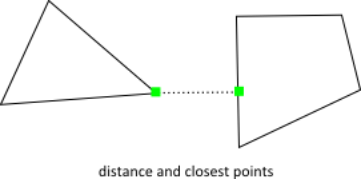
Time of Impact
如果两个形状移动得很快，它们可能会在一个时间步长内相互穿过。
b2TimeOfImpact 函数用于确定两个移动形状碰撞的时间。 这称为影响时间 (TOI)。 b2TimeOfImpact 的主要目的是预防隧道。 特别是，它旨在防止移动物体在静态关卡几何体之外挖出隧道。
该函数考虑了两个形状的旋转和平移，但是如果旋转足够大，则该函数可能会错过碰撞。 但是，该函数仍将报告非重叠时间，并将捕获所有平移碰撞。
影响函数的时间标识了一个初始分离轴，并确保形状不会在该轴上交叉。 这可能会错过在最终位置清晰的碰撞。 虽然这种方法可能会遗漏一些冲突，但它非常快速且足以预防隧道。
很难对旋转幅度进行限制。 在某些情况下，小旋转可能会错过碰撞。 通常，这些错过的旋转碰撞不应损害游戏玩法。 他们往往是瞥见碰撞。
该函数需要两个形状（转换为 b2DistanceProxy）和两个 b2Sweep 结构。 扫描结构定义了形状的初始和最终变换。
您可以使用固定旋转来执行造型。 在这种情况下，影响时间函数不会错过任何碰撞。
4.5 Dynamic Tree
Box2D 使用 b2DynamicTree 类来有效地组织大量形状。全班不知道形状。相反，它在带有用户数据指针的轴对齐边界框 (AABB) 上运行。
动态树是分层的 AABB 树。树中的每个内部节点都有两个子节点。叶节点是单个用户 AABB。树使用旋转来保持树的平衡，即使在退化输入的情况下也是如此。
树形结构允许高效的光线投射和区域查询。例如，您的场景中可能有数百个形状。您可以通过对每个形状进行射线投射，以蛮力的方式对场景执行射线投射。这将是低效的，因为它没有利用分散的形状。相反，您可以维护动态树并对树执行光线投射。这会通过跳过大量形状的树来遍历射线。
区域查询使用树来查找与查询 AABB 重叠的所有叶 AABB。这比蛮力方法更快，因为可以跳过许多形状。
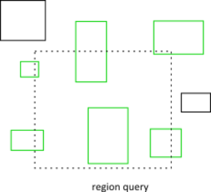
通常你不会直接使用动态树。 相反，您将通过 b2World 类进行光线投射和区域查询。 如果您打算实例化自己的动态树，您可以通过查看 Box2D 如何使用它来学习如何使用它。
4.6 Broad-phase
物理步骤中的碰撞处理可以分为窄相和宽相。 在窄相中，我们计算形状对之间的接触点。 假设我们有 N 个形状。 使用蛮力，我们需要对 N*N/2 对执行窄相位。
b2BroadPhase 类通过使用动态树进行配对管理来减少这种负载。 这大大减少了窄相调用的数量。
通常你不直接与广相交互。 相反，Box2D 在内部创建和管理一个广泛的阶段。 此外，b2BroadPhase 的设计考虑了 Box2D 的模拟循环，因此它可能不适合其他用例。
章节5 Dynamics Module
5.1 概述
Dynamics 模块是 Box2D 中最复杂的部分，也是您可能接触最多的部分。 Dynamics 模块位于 Common 和 Collision 模块之上，因此您现在应该对它们有些熟悉。
动态模块包含：
·夹具类
·刚体类
·接触类
·联合课程
·世界级
·监听类
这些类之间存在许多依赖关系，因此很难描述一个类而不引用另一个类。 在下文中，您可能会看到一些对尚未描述的类的引用。 因此，在仔细阅读之前，您可能需要快速浏览本章。
动力学模块将在以下章节中介绍。
章节6 Bodies
6.1 关于
物体具有位置和速度。 您可以对实体施加力、扭矩和冲量。 实体可以是静态的、运动的或动态的。 以下是身体类型定义：
b2_staticBody
静态物体在模拟下不会移动，并且表现得好像它具有无限质量。 在内部，Box2D 将质量和反质量存储为零。 静态物体可以由用户手动移动。 静态物体的速度为零。 静态实体不会与其他静态或运动实体发生碰撞。
b2_kinematicBody
运动体根据其速度在模拟下移动。 运动学物体不响应力。 它们可以由用户手动移动，但通常运动体通过设置其速度来移动。 运动物体的行为就好像它具有无限质量，但是，Box2D 将质量和反质量存储为零。 运动体不会与其他运动体或静态体发生碰撞。
b2_dynamicBody
一个动态的身体是完全模拟的。它们可以由用户手动移动，但通常它们会根据力移动。动态物体可以与所有物体类型发生碰撞。动态物体总是具有有限的非零质量。如果您尝试将动态物体的质量设置为零，它会自动获得一公斤的质量并且不会旋转。
实体是固定装置（形状）的支柱。身体携带固定装置并在世界各地移动它们。在 Box2D 中，刚体始终是刚体。这意味着连接到同一个刚体的两个夹具永远不会相对于彼此移动，并且连接到同一个刚体的夹具不会发生碰撞。
夹具具有碰撞几何形状和密度。通常，物体从固定装置中获取它们的质量属性。但是，您可以在构造实体后覆盖质量属性。
您通常会保留指向您创建的所有实体的指针。通过这种方式，您可以查询身体位置以更新图形实体的位置。您还应该保留正文指针，以便在完成后销毁它们。
6.2 Body 的定义
在创建主体之前，您必须创建主体定义 (b2BodyDef)。 主体定义包含创建和初始化主体所需的数据。
Box2D 将数据从 body 定义中复制出来； 它不保留指向正文定义的指针。 这意味着您可以循环使用一个实体定义来创建多个实体。
让我们回顾一下 body 定义的一些关键成员。
Body Type
正如本章开头所讨论的，共有三种不同的身体类型：静态的、运动的和动态的。 您应该在创建时确定主体类型，因为稍后更改主体类型很昂贵。
bodyDef.type = b2_dynamicBody;
设置身体类型是强制性的。
Position and Angle
身体定义让您有机会在创建时初始化身体的位置。 这比在世界原点创建身体然后移动身体要好得多。
警告
不要在原点创建实体然后移动它。 如果您在原点创建多个实体，则性能会受到影响。
一个主体有两个主要的兴趣点。 第一点是身体的起源。 固定装置和关节相对于身体的原点连接。 第二个兴趣点是质心。 质心由附加形状的质量分布确定，或使用 b2MassData 显式设置。 Box2D 的大部分内部计算都使用质心位置。 例如 b2Body 存储质心的线速度。
在构建体定义时，您可能不知道质心的位置。 因此，您指定了身体原点的位置。 您还可以以弧度为单位指定主体的角度，该角度不受质心位置的影响。 如果稍后更改实体的质量属性，则重心可能会在实体上移动，但原点位置不会改变，附加的形状和关节也不会移动。
bodyDef.position.Set(0.0f, 2.0f); // the body's origin position.
bodyDef.angle = 0.25f * b2_pi; // the body's angle in radians.
刚体也是一个参考系。 您可以在该框架中定义夹具和关节。 那些固定装置和关节锚永远不会在身体的局部框架中移动。
Damping
阻尼（Damaging）用于降低物体的世界速度。 阻尼不同于摩擦，因为摩擦只发生在接触中。 阻尼不是摩擦的替代品，这两种效果应该一起使用。
阻尼参数应介于 0 和无穷大之间，0 表示无阻尼，无穷大表示完全阻尼。 通常，您将使用 0 到 0.1 之间的阻尼值。 我通常不使用线性阻尼，因为它使物体看起来像是漂浮的。
bodyDef.linearDamping = 0.0f;
bodyDef.angularDamping = 0.01f;
阻尼是为了稳定性和性能而近似的。 在较小的阻尼值下，阻尼效果主要与时间步长无关。 在较大的阻尼值下，阻尼效果将随时间步长而变化。 如果您使用固定时间步长，这不是问题（推荐）。
Gravity Scale
您可以使用重力刻度来调整单个物体的重力。 不过要小心，增加重力会降低稳定性。
// Set the gravity scale to zero so this body will float
bodyDef.gravityScale = 0.0f;
Sleep Parameters
睡觉是什么意思？ 嗯，模拟身体很昂贵，所以我们模拟的越少越好。 当一个物体静止时，我们希望停止模拟它。
当 Box2D 确定一个物体（或一组物体）已经静止时，该物体进入睡眠状态，CPU 开销非常小。 如果一个物体醒着并与一个睡着的物体发生碰撞，那么这个睡着的物体就会醒来。 如果与身体相连的关节或触点被破坏，身体也会醒来。 您也可以手动唤醒身体。
body 定义允许您指定一个 body 是否可以休眠以及是否创建一个 body 休眠。
bodyDef.allowSleep = true;
bodyDef.awake = true;
Fixed Rotation
您可能希望刚体（例如角色）具有固定的旋转。 即使在负载下，这样的物体也不应该旋转。 您可以使用固定旋转设置来实现此目的:
bodyDef.fixedRotation = true;
固定旋转标志导致旋转惯量及其倒数设置为零。
Bullets
游戏模拟通常会生成一系列以某种帧速率播放的图像。这称为离散模拟。在离散模拟中，刚体可以在一个时间步长内大量移动。如果物理引擎不考虑大运动，您可能会看到一些对象错误地相互穿过。这种效应称为隧道效应。
默认情况下，Box2D 使用连续碰撞检测 (CCD) 来防止动态物体穿过静态物体。这是通过将形状从旧位置扫到新位置来完成的。引擎在扫描期间寻找新的碰撞并计算这些碰撞的碰撞时间 (TOI)。物体被移动到它们的第一个 TOI，然后求解器执行一个子步骤来完成整个时间步骤。一个子步骤中可能有额外的 TOI 事件。
通常动态物体之间不使用CCD。这样做是为了保持性能合理。在某些游戏场景中，您需要动态物体才能使用 CCD。例如，您可能想在一堆动态砖块上发射高速子弹。如果没有 CCD，子弹可能会穿过砖块。
Box2D 中快速移动的物体可以被标记为子弹。 Bullets 将对静态和动态物体执行 CCD。你应该根据你的游戏设计决定哪些身体应该是子弹。如果您决定将身体视为子弹，请使用以下设置。
bodyDef.bullet = true;
子弹标志只影响动态物体。
Activation
您可能希望创建一个实体但不参与碰撞或动力学。 这种状态类似于睡眠，除了身体不会被其他身体唤醒，身体的固定装置不会被放置在宽相位。 这意味着身体不会参与碰撞、光线投射等。
您可以创建一个处于非活动状态的主体，然后再重新激活它。
bodyDef.active = true;
关节可以连接到非活动体。 这些关节将不会被模拟。 当你激活一个身体时，你应该小心它的关节不会扭曲。
请注意，激活身体几乎与从头开始创建身体一样昂贵。 所以你不应该对流媒体世界使用激活。 使用流式世界的创建/销毁来节省内存。
User Data
用户数据是一个空指针。 这为您提供了将应用程序对象链接到主体的挂钩。 您应该一致地为所有身体用户数据使用相同的对象类型。
b2BodyDef bodyDef;
bodyDef.userData = &myActor;
6.3 Body Factory
使用世界级提供的车身工厂来创建和销毁车身。 这让世界使用高效的分配器创建主体，并将主体添加到世界数据结构中。
b2Body* dynamicBody = myWorld->CreateBody(&bodyDef);
... do stuff ...
myWorld->DestroyBody(dynamicBody);
dynamicBody = NULL;
警告
您永远不应该使用 new 或 malloc 来创建主体。 世界不会知道身体，身体也不会被正确初始化。
Box2D 不保留对主体定义或它持有的任何数据的引用（用户数据指针除外）。 因此，您可以创建临时主体定义并重用相同的主体定义。
Box2D 允许您通过删除 b2World 对象来避免破坏物体，它会为您完成所有清理工作。 但是，您应该注意使您保留在游戏引擎中的主体指针无效。
当您销毁一个实体时，附加的固定装置和关节会自动销毁。 这对您如何管理形状和关节指针具有重要意义。
6.4 Using a Body
创建主体后，您可以对主体执行许多操作。 这些包括设置质量属性、访问位置和速度、施加力以及转换点和矢量。
Mass Data
一个物体有质量（标量）、质心（2-vector）和转动惯量（标量）。 对于静态物体，质量和转动惯量设置为零。 当物体具有固定旋转时，其转动惯量为零。
通常，当将夹具添加到主体时，主体的质量属性会自动建立。 您还可以在运行时调整物体的质量。 这通常在您有需要更改质量的特殊游戏场景时完成。
void SetMassData(const b2MassData* data);
直接设置物体的质量后，您可能希望恢复到固定装置指定的自然质量。 你可以这样做。
void ResetMassData();
身体的质量数据可通过以下功能获得:
float32 GetMass() const;
float32 GetInertia() const;
const b2Vec2& GetLocalCenter() const;
void GetMassData(b2MassData* data) const;
State Information
身体的状态有很多方面。 您可以通过以下函数有效地访问此状态数据:
void SetType(b2BodyType type);
b2BodyType GetType();
void SetBullet(bool flag);
bool IsBullet() const;
void SetSleepingAllowed(bool flag);
bool IsSleepingAllowed() const;
void SetAwake(bool flag);
bool IsAwake() const;
void SetActive(bool flag);
bool IsActive() const;
void SetFixedRotation(bool flag);
bool IsFixedRotation() const;
Position and Velocity
您可以访问实体的位置和旋转。 这在渲染关联的游戏角色时很常见。 您也可以设置位置，尽管这不太常见，因为您通常会使用 Box2D 来模拟运动。
bool SetTransform(const b2Vec2& position, float32 angle);
const b2Transform& GetTransform() const;
const b2Vec2& GetPosition() const;
float32 GetAngle() const;
您可以访问本地和世界坐标中的质心位置。 Box2D 中的大部分内部模拟都使用质心。 但是，您通常不需要访问它。 相反，您通常会使用身体变换。 例如，您的身体可能是方形的。 身体原点可能是正方形的一个角，而质心位于正方形的中心。
const b2Vec2& GetWorldCenter() const;
const b2Vec2& GetLocalCenter() const;
您可以访问线速度和角速度。 线速度是针对质心的。 因此，如果质量属性发生变化，线速度可能会发生变化。
章节7 Fixtures
7.1 关于
511 / 5,000
翻译结果
回想一下，形状不了解物体，并且可以独立于物理模拟使用。 因此 Box2D 提供了 b2Fixture 类来将形状附加到物体上。 一个主体可能有零个或多个固定装置。 具有多个固定装置的主体有时称为复合主体。 夹具包含以下内容：
·单一形状
·广泛阶段代理
·密度、摩擦和恢复
·碰撞过滤标志
· 指向父体的反向指针
用户数据
·传感器标志
这些将在以下部分中进行描述。
7.2 Fixtures Creation
Fixtures是通过初始化Fixtures定义然后将定义传递给父体来创建的.
b2FixtureDef fixtureDef;
fixtureDef.shape = &myShape;
fixtureDef.density = 1.0f;
b2Fixture* myFixture = myBody->CreateFixture(&fixtureDef);
这将创建fixture并将其连接到身体。 您不需要存储fixture pointer，因为当父主体被销毁时，fixture将自动被销毁。 您可以在一个实体上创建多个fixture。
您可以销毁父主体上的固定装置。 您可以这样做来为易碎对象建模。 否则，您可以不理会固定装置，让主体破坏负责破坏连接的固定装置。
myBody->DestroyFixture(myFixture);
Density
The fixture密度用于计算父实体的质量属性。 密度可以为零或正。 您通常应该对所有灯具使用相似的密度。 这将提高堆叠稳定性。
设置密度时不会调整实体的质量。 您必须调用 ResetMassData 才能发生这种情况。
fixture->SetDensity(5.0f);
body->ResetMassData();
Friction
摩擦力（Friction）用于使物体真实地相互滑动。 Box2D 支持静态和动态摩擦，但两者使用相同的参数。 在 Box2D 中精确模拟了摩擦，摩擦强度与法向力成正比（这称为库仑摩擦）。 摩擦参数通常设置在 0 和 1 之间，但可以是任何非负值。 摩擦值为 0 会关闭摩擦，值为 1 会使摩擦变强。 当计算两个形状之间的摩擦力时，Box2D 必须结合两个父夹具的摩擦参数。 这是用几何平均值完成的。
float32 friction;
friction = sqrtf(fixtureA->friction * fixtureB->friction);
因此，如果一个Fixture的摩擦力为零，则触点的摩擦力将为零。
您可以使用 b2Contact::SetFriction 覆盖默认的混合摩擦。 这通常在 b2ContactListener 回调中完成。
Restitution
恢复原状用于使物体反弹。 恢复值通常设置在 0 和 1 之间。考虑将球放在桌子上。 零值意味着球不会反弹。 这称为非弹性碰撞。 值为 1 表示将准确反映球的速度。 这被称为完全弹性碰撞。 使用以下公式组合恢复原状。
float32 restitution;
restitution = b2Max(fixtureA->restitution, fixtureB->restitution);
恢复原状以这种方式组合在一起，这样您就可以在没有弹力地板的情况下拥有一个有弹性的超级球。
您可以使用 b2Contact::SetRestitution 覆盖默认的混合恢复。 这通常在 b2ContactListener 回调中完成。
当一个形状产生多个接触时，近似地模拟恢复。 这是因为 Box2D 使用了迭代求解器。 当碰撞速度较小时，Box2D 也使用非弹性碰撞。 这样做是为了防止抖动。 请参阅 b2Settings.h 中的 b2_velocityThreshold。
Filtering
碰撞过滤允许您防止灯具之间的碰撞。 例如，假设您制作了一个骑自行车的角色。 您希望自行车与地形发生碰撞，角色与地形发生碰撞，但您不希望角色与自行车发生碰撞（因为它们必须重叠）。 Box2D 支持使用类别和组进行此类碰撞过滤。
Box2D 支持 16 种碰撞类别。 对于每个灯具，您可以指定它属于哪个类别。 您还可以指定此夹具可以与哪些其他类别发生冲突。 例如，您可以在多人游戏中指定所有玩家不相互碰撞，怪物不相互碰撞，但玩家和怪物应该碰撞。 这是通过屏蔽位完成的。 例如:
playerFixtureDef.filter.categoryBits = 0x0002;
monsterFixtureDef.filter.categoryBits = 0x0004;
playerFixtureDef.filter.maskBits = 0x0004;
monsterFixtureDef.filter.maskBits = 0x0002;
这是发生碰撞的规则:
uint16 catA = fixtureA.filter.categoryBits;
uint16 maskA = fixtureA.filter.maskBits;
uint16 catB = fixtureB.filter.categoryBits;
uint16 maskB = fixtureB.filter.maskBits;
if ((catA & maskB) != 0 && (catB & maskA) != 0)
{
// fixtures can collide
}
碰撞组允许您指定一个完整的组索引。 您可以让所有具有相同组索引的灯具总是碰撞（正索引）或从不碰撞（负索引）。 组索引通常用于以某种方式相关的事物，例如自行车的零件。 在下面的例子中，fixture1 和fixture2 总是发生碰撞，但是fixture3 和fixture4 从不发生碰撞。
fixture1Def.filter.groupIndex = 2;
fixture2Def.filter.groupIndex = 2;
fixture3Def.filter.groupIndex = -8;
fixture4Def.filter.groupIndex = -8;
根据类别和掩码位过滤不同组索引的灯具之间的冲突。 换句话说，组过滤比类别过滤具有更高的优先级。
请注意，额外的碰撞过滤发生在 Box2D 中。 这是一个列表：
l ·静态物体上的夹具只能与动态物体碰撞。
l ·运动体上的夹具只能与动态体发生碰撞。
l ·同一身体上的夹具永远不会相互碰撞。
l ·您可以选择启用/禁用通过关节连接的实体上的夹具之间的碰撞。
有时您可能需要在已创建Fixture后更改碰撞过滤。 您可以使用 b2Fixture::GetFilterData 和 b2Fixture::SetFilterData 在现有Fixture上获取和设置 b2Filter 结构。 请注意，在下一个时间步之前更改过滤器数据不会添加或删除联系人（请参阅 World 类）。
7.3 Sensors
有时游戏逻辑需要知道两个固定装置何时重叠但不应该有碰撞响应。 这是通过使用传感器来完成的。 传感器是检测碰撞但不产生响应的夹具。
您可以将任何灯具标记为传感器。 传感器可以是静态的、运动的或动态的。 请记住，每个主体可能有多个固定装置，并且可以混合使用传感器和实体固定装置。 此外，传感器仅在至少一个物体是动态的时才形成接触，因此您不会获得运动学与运动学、运动学与静态或静态与静态的接触。
传感器不产生接触点。 有两种方法可以获取传感器的状态:
1. b2Contact::IsTouching
2. b2ContactListener::BeginContact and EndContact
章节8 Joints
8.1 About
关节用于将物体约束到世界或相互约束。 游戏中的典型例子包括布娃娃、跷跷板和滑轮。 关节可以以许多不同的方式组合以创建有趣的动作。
一些关节提供限制，因此您可以控制运动范围。 一些关节提供可用于以规定速度驱动关节直到超过规定力/扭矩的马达。
关节马达有多种用途。 您可以通过指定与实际位置和所需位置之间的差异成比例的关节速度来使用电机来控制位置。 您还可以使用电机来模拟关节摩擦：将关节速度设置为零并提供一个小但显着的最大电机力/扭矩。 然后电机将试图阻止关节移动，直到负载变得太强。
8.2 The Joint Definition
每个关节类型都有一个派生自 b2JointDef 的定义。所有关节都连接在两个不同的身体之间。一个身体可能是静止的。静态和/或运动实体之间的关节是允许的，但没有效果并且需要一些处理时间。
您可以为任何关节类型指定用户数据，并且可以提供一个标志来防止附加的实体相互碰撞。这实际上是默认行为，您必须设置 collideConnected 布尔值以允许连接的物体之间发生碰撞。
许多关节定义要求您提供一些几何数据。通常一个关节将由锚点定义。这些是固定在附着体中的点。 Box2D 要求在本地坐标中指定这些点。这样，即使当前的身体变换违反了关节约束，也可以指定关节――这是保存和重新加载游戏时常见的情况。此外，一些关节定义需要知道身体之间的默认相对角度。这是正确约束旋转所必需的。
初始化几何数据可能很乏味，因此许多关节都有初始化函数，这些函数使用当前的身体变换来消除大部分工作。然而，这些初始化函数通常应该只用于原型设计。生产代码应直接定义几何。这将使联合行为更加健壮。
其余关节定义数据取决于关节类型。我们现在介绍这些。
8.3 Joint Factory
使用世界工厂方法创建和销毁关节。 这就引出了一个老问题：
警告
不要尝试使用 new 或 malloc 在堆栈或堆上创建关节。 您必须使用 b2World 类的创建和销毁方法来创建和销毁实体和关节。
Here's an example of the lifetime of a revolute joint:
b2RevoluteJointDef jointDef;
jointDef.bodyA = myBodyA;
jointDef.bodyB = myBodyB;
jointDef.anchorPoint = myBodyA->GetCenterPosition();
b2RevoluteJoint* joint = (b2RevoluteJoint*)myWorld->CreateJoint(&jointDef);
... do stuff ...
myWorld->DestroyJoint(joint);
joint = NULL;
销毁指针后将其无效总是好的。 如果您尝试重用指针，这将使程序以受控方式崩溃。
关节的寿命并不简单。 听好这个警告:
警告
当附着的物体被破坏时，关节被破坏。
这种预防措施并不总是必要的。 您可以组织您的游戏引擎，以便关节总是在连接的身体之前被破坏。 在这种情况下，您不需要实现侦听器类。 有关详细信息，请参阅隐式销毁部分。
8.4 Using Joints
许多模拟创建关节并且在它们被破坏之前不会再次访问它们。 但是，关节中包含许多有用的数据，您可以使用它们来创建丰富的模拟。
首先，您可以从关节中获取身体、锚点和用户数据。
b2Body* GetBodyA();
b2Body* GetBodyB();
b2Vec2 GetAnchorA();
b2Vec2 GetAnchorB();
void* GetUserData();
所有关节都有反作用力和扭矩。 这是在锚点处施加到主体 2 的反作用力。 您可以使用反作用力来破坏关节或触发其他游戏事件。 这些函数可能会做一些计算，所以如果你不需要结果就不要调用它们。
b2Vec2 GetReactionForce();
float32 GetReactionTorque();
8.5 Distance Joint
最简单的关节之一是距离关节，它表示两个物体上两点之间的距离必须是恒定的。 当您指定距离关节时，两个实体应该已经就位。 然后在世界坐标中指定两个锚点。 第一个锚点连接到body 1，第二个锚点连接到body 2。这些点暗示了距离约束的长度。
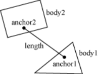
这是距离关节定义的示例。 在这种情况下，我们决定让物体发生碰撞。
b2DistanceJointDef jointDef;
jointDef.Initialize(myBodyA, myBodyB, worldAnchorOnBodyA, worldAnchorOnBodyB);
jointDef.collideConnected = true;
距离接头也可以制成柔软的，如弹簧-阻尼器连接。 请参阅测试平台中的 Web 示例以了解其行为方式。
柔软度是通过调整定义中的两个常数来实现的：频率和阻尼比。 将频率视为谐波振荡器的频率（如吉他弦）。 频率以赫兹为单位指定。 通常，频率应小于时间步长频率的一半。 因此，如果您使用 60Hz 时间步长，则距离关节的频率应小于 30Hz。 原因与奈奎斯特频率有关。
阻尼比是无量纲的，通常介于 0 和 1 之间，但可以更大。 在 1 时，阻尼很关键（所有振荡都应该消失）。
jointDef.frequencyHz = 4.0f;
jointDef.dampingRatio = 0.5f;
8.6 Revolute Joint
旋转关节迫使两个物体共享一个共同的锚点，通常称为铰链点。 旋转关节有一个单一的自由度：两个物体的相对旋转。 这称为关节角。
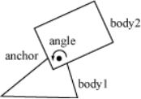
要指定旋转，您需要在世界空间中提供两个实体和一个锚点。 初始化函数假定物体已经在正确的位置。
在此示例中，两个实体通过第一个实体的质心处的旋转关节连接。
b2RevoluteJointDef jointDef;
jointDef.Initialize(myBodyA, myBodyB, myBodyA->GetWorldCenter());
当bodyB绕角度点CCW旋转时，旋转关节角度为正。 与 Box2D 中的所有角度一样，旋转角度以弧度为单位。 按照惯例，当使用 Initialize() 创建关节时，无论两个物体的当前旋转如何，旋转关节角度都为零。
在某些情况下，您可能希望控制关节角度。 为此，旋转关节可以选择模拟关节极限和/或电机。
关节限制强制关节角度保持在下限和上限之间。 该限制将根据需要施加尽可能多的扭矩来实现这一点。 限制范围应包括零，否则在模拟开始时关节会倾斜。
关节电机允许您指定关节速度（角度的时间导数）。 速度可以是负数或正数。 电动机可以具有无限的力，但这通常是不可取的。 回想永恒的问题:
"What happens when an irresistible force meets an immovable object?"
我可以告诉你它不漂亮。 因此，您可以为关节电机提供最大扭矩。 除非所需扭矩超过规定的最大值，否则关节电机将保持规定的速度。 当超过最大扭矩时，关节会减速，甚至会反转。
您可以使用关节电机来模拟关节摩擦。 只需将关节速度设置为零，并将最大扭矩设置为一些小但重要的值。 电机将试图阻止关节旋转，但会承受很大的负载。
这是对上述旋转联合定义的修订； 这次关节有一个限制和一个启用的电机。 电机设置为模拟关节摩擦。
b2RevoluteJointDef jointDef;
jointDef.Initialize(bodyA, bodyB, myBodyA->GetWorldCenter());
jointDef.lowerAngle = -0.5f * b2_pi; // -90 degrees
jointDef.upperAngle = 0.25f * b2_pi; // 45 degrees
jointDef.enableLimit = true;
jointDef.maxMotorTorque = 10.0f;
jointDef.motorSpeed = 0.0f;
jointDef.enableMotor = true;
您可以访问旋转关节角度、速度和电机扭矩。
float32 GetJointAngle() const;
float32 GetJointSpeed() const;
float32 GetMotorTorque() const;
您还可以在每一步更新电机参数。
void SetMotorSpeed(float32 speed);
void SetMaxMotorTorque(float32 torque);
联合马达有一些有趣的能力。 您可以在每个时间步更新关节速度，这样您就可以使关节像正弦波一样来回移动或根据您想要的任何功能.
... Game Loop Begin ...
myJoint->SetMotorSpeed(cosf(0.5f * time));
... Game Loop End ...
您还可以使用关节电机来跟踪所需的关节角度。 例如:
... Game Loop Begin ...
float32 angleError = myJoint->GetJointAngle() - angleTarget;
float32 gain = 0.1f;
myJoint->SetMotorSpeed(-gain * angleError);
... Game Loop End ...
通常你的增益参数不应该太大。 否则你的关节可能会变得不稳定。
8.7 Prismatic Joint
棱柱关节允许两个物体沿指定轴进行相对平移。 棱柱形接头可防止相对旋转。 因此，棱柱关节具有单一自由度。
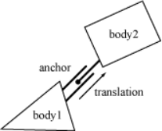
棱柱关节定义类似于旋转关节描述； 只需用平移代替角度，用力代替扭矩。 使用这个类比提供了一个带有关节限制和摩擦电机的棱柱关节定义示例:
b2PrismaticJointDef jointDef;
b2Vec2 worldAxis(1.0f, 0.0f);
jointDef.Initialize(myBodyA, myBodyB, myBodyA->GetWorldCenter(), worldAxis);
jointDef.lowerTranslation = -5.0f;
jointDef.upperTranslation = 2.5f;
jointDef.enableLimit = true;
jointDef.maxMotorForce = 1.0f;
jointDef.motorSpeed = 0.0f;
jointDef.enableMotor = true;
旋转关节有一个隐含的轴从屏幕出来。 棱柱关节需要一个平行于屏幕的显式轴。 该轴固定在两个物体中并跟随它们的运动。
与旋转关节一样，棱柱关节平移在使用 Initialize() 创建关节时为零。 因此，请确保在您的翻译上限和下限之间为零。
使用棱柱关节类似于使用旋转关节。 以下是相关的成员函数:
float32 GetJointTranslation() const;
float32 GetJointSpeed() const;
float32 GetMotorForce() const;
void SetMotorSpeed(float32 speed);
void SetMotorForce(float32 force);
8.8 Pulley Joint
滑轮用于创建理想化的滑轮。 滑轮将两个物体接地并相互连接。 当一个身体上升时，另一个下降。 根据初始配置，滑轮绳的总长度是守恒的。
length1 + length2 == constant
您可以提供一个模拟拦截和铲球的比率。 这导致滑轮的一侧比另一侧延伸得更快。 同时，一侧的约束力小于另一侧。 您可以使用它来创建机械杠杆。
length1 + ratio * length2 == constant
例如，如果比率为 2，则 length1 将以 length2 的两倍变化。 此外，附在 body1 上的绳索中的力将是附在 body2 上的绳索的一半约束力。
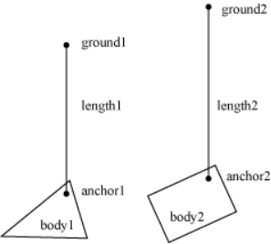
当一侧完全伸展时，滑轮可能会很麻烦。 另一侧的绳索长度为零。 在这一点上，约束方程变成奇异的（坏的）。 您应该配置碰撞形状来防止这种情况。
这是一个示例滑轮定义:
b2Vec2 anchor1 = myBody1->GetWorldCenter();
b2Vec2 anchor2 = myBody2->GetWorldCenter();
b2Vec2 groundAnchor1(p1.x, p1.y + 10.0f);
b2Vec2 groundAnchor2(p2.x, p2.y + 12.0f);
float32 ratio = 1.0f;
b2PulleyJointDef jointDef;
jointDef.Initialize(myBody1, myBody2, groundAnchor1, groundAnchor2, anchor1, anchor2, ratio);
滑轮接头提供当前长度。
float32 GetLengthA() const;
float32 GetLengthB() const;
8.9 Gear Joint
如果您想创建一个复杂的机械装置，您可能需要使用齿轮。 原则上，您可以在 Box2D 中通过使用复合形状对齿轮齿建模来创建齿轮。 这不是很有效，对作者来说可能很乏味。 您还必须小心排列齿轮，使齿啮合顺畅。 Box2D 有一种更简单的创建齿轮的方法: the gear joint.
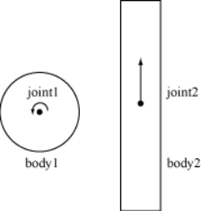
齿轮接头只能连接旋转接头和/或棱柱接头。
与皮带轮比一样，您可以指定齿轮比。 然而，在这种情况下，传动比可以是负数。 还要记住，当一个关节是旋转关节（角度）而另一个关节是棱柱形（平移）时，齿轮比将具有长度单位或长度单位。
coordinate1 + ratio * coordinate2 == constant
这是一个示例齿轮接头。 实体 myBodyA 和 myBodyB 是来自两个关节的任何实体，只要它们不是同一个实体。
b2GearJointDef jointDef;
jointDef.bodyA = myBodyA;
jointDef.bodyB = myBodyB;
jointDef.joint1 = myRevoluteJoint;
jointDef.joint2 = myPrismaticJoint;
jointDef.ratio = 2.0f * b2_pi / myLength;
请注意，齿轮接头取决于其他两个接头。 这造成了一个脆弱的局面。 如果这些关节被删除会发生什么?
警告
始终在齿轮上的旋转/棱柱关节之前删除齿轮关节。 否则，由于齿轮接头中的孤立关节指针，您的代码将以糟糕的方式崩溃。 在删除任何涉及的实体之前，您还应该删除齿轮接头。
8.10 Mouse Joint
鼠标关节在测试台中用于用鼠标操纵身体。 它试图将身体上的一个点驱动到光标的当前位置。 旋转没有限制。
鼠标关节定义有目标点、最大力、频率和阻尼比。 目标点最初与身体的锚点重合。 当多个动态物体相互作用时，使用最大力来防止剧烈反应。 你可以把它放大到你喜欢的大小。 频率和阻尼比用于创建类似于距离接头的弹簧/阻尼器效果。
许多用户试图调整鼠标关节以进行游戏。 用户往往希望实现精准定位和瞬时响应。 鼠标关节在这种情况下不能很好地工作。 您可能希望考虑改用运动学实体。
8.11 Wheel Joint
车轮接头将 body 上的一个点限制为 bodyA 上的一条线。 车轮接头还提供了一个悬挂弹簧。 详见 b2Wheel Joint.hand Car.h。
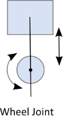
8.12 Weld Joint
焊接接头试图约束两个实体之间的所有相对运动。 查看测试台中的 Cantilever.h 以了解焊接接头的行为。
使用焊接接头来定义易碎结构是很诱人的。 然而，Box2D 求解器是迭代的，所以关节有点软。 因此，通过焊接接头连接的主体链会弯曲。
相反，最好从具有多个固定装置的单个主体开始创建易碎主体。 当身体断裂时，您可以破坏一个固定装置并在一个新的身体上重新创建它。 请参阅测试平台中的 Breakable 示例。
8.13 Rope Joint
绳索接头限制了两点之间的最大距离。 即使在高负载下，这对于防止身体链条拉伸也很有用。 有关详细信息，请参阅 b2RopeJoint.h 和 RopeJoint.h。
8.14 Friction Joint
摩擦接头用于自上而下的摩擦。 关节提供 2D 平移摩擦和角摩擦。 有关详细信息，请参见 b2FrictionJoint.h 和 ApplyForce.h。
8.15 Motor Joint
电机关节允许您通过指定目标位置和旋转偏移来控制身体的运动。 您可以设置用于达到目标位置和旋转的最大电机力和扭矩。 如果身体被阻挡，它将停止并且接触力将与最大电机力和扭矩成比例。 有关详细信息，请参阅 b2MotorJoint 和 MotorJoint.h。
章节9 Contacts
9.1 About
Contacts是 Box2D 创建的对象，用于管理两个灯具之间的碰撞。 如果夹具有子项，例如链形，则每个相关子项都存在一个Contacts。 从 b2Contact 派生出不同种类的联系人，用于管理不同类型的灯具之间的联系。 例如，有一个用于管理多边形-多边形碰撞的接触类和另一个用于管理圆-圆碰撞的接触类。
这是一些与Contacts相关的术语。
contact point
接触点是两个形状接触的点。 Box2D 近似接触少量点。
contact normal
接触法线是从一个形状指向另一个形状的单位向量。 按照惯例，从fixtureA到fixtureB的法线点。
contact separation
分离与渗透相反。 当形状重叠时，分离为负。 Box2D 的未来版本可能会创建正分离的接触点，因此您可能需要在报告接触点时检查符号。
contact manifold
两个凸多边形之间的接触最多可以产生 2 个接触点。 这两个点都使用相同的法线，因此它们被分组为一个接触流形，这是一个连续接触区域的近似值。
normal impulse
法向力是施加在接触点上以防止形状穿透的力。 为方便起见，Box2D 使用冲动。 法向冲量就是法向力乘以时间步长。
tangent impulse
在接触点处产生切向力以模拟摩擦。 为方便起见，将其存储为冲动。
contact ids
Box2D 尝试重新使用来自时间步的接触力结果作为下一个时间步的初始猜测。 Box2D 使用联系人 ID 来匹配跨时间步长的接触点。 id 包含有助于区分一个接触点和另一个接触点的几何特征索引。
当两个夹具的 AABB 重叠时会创建接触。 有时碰撞过滤会阻止创建联系人。 AABB 不再重叠，触点被破坏。
因此，您可能会发现可能为不接触的固定装置（仅它们的 AABB）创建了联系人。 嗯，这是正确的。 这是一个“先有鸡还是先有蛋”的问题。 我们不知道我们是否需要一个接触对象，直到创建一个来分析碰撞。 如果形状没有接触，我们可以立即删除联系人，或者我们可以等到 AABB 停止重叠。 Box2D 采用后一种方法，因为它让系统缓存信息以提高性能。
9.2 Contact Class
如前所述，Contact Class由 Box2D 创建和销毁。 Contacts对象不是由用户创建的。 但是，您可以访问Contact C;lass并与之交互。
您可以访问原始接触歧管:
b2Manifold* GetManifold();
const b2Manifold* GetManifold() const;
您可以潜在地修改歧管，但这通常不受支持并且用于高级用途。
有一个辅助函数来获取 b2WorldManifold:
void GetWorldManifold(b2WorldManifold* worldManifold) const;
这使用物体的当前位置来计算接触点的世界位置。
传感器不会创建歧管，因此对他们来说使用:
bool touching = sensorContact->IsTouching();
此功能也适用于非传感器。
您可以从Contacts那里获得固定装置。 从那些你可以得到Bodies.
b2Fixture* fixtureA = myContact->GetFixtureA();
b2Body* bodyA = fixtureA->GetBody();
MyActor* actorA = (MyActor*)bodyA->GetUserData();
您可以禁用Contacts。 这仅适用于 b2ContactListener::PreSolve 事件，如下所述。
9.3 Accessing Contacts
您可以通过多种方式访问Contacts。 您可以直接在世界和身体结构上访问Contacts。 您还可以实现一个Contacts监听器。
你可以遍历世界上所有的Contacts:
for (b2Contact* c = myWorld->GetContactList(); c; c = c->GetNext())
{
// process c
}
您还可以遍历身体上的所有Contacts。 这些使用接触边结构存储在图形中。
for (b2ContactEdge* ce = myBody->GetContactList(); ce; ce = ce->next)
{
b2Contact* c = ce->contact;
// process c
}
您还可以使用下面描述的联系人侦听器访问Contacts.
警告
从 b2World 和 b2Body 访问Contacts可能会错过一些发生在时间步中间的瞬时Contacts。 使用 b2ContactListener 获得最准确的结果。
9.4 Contact Listener
您可以通过实现 b2ContactListener 来接收联系人数据。 联系侦听器支持多个事件：开始、结束、预解决和后解决。
class MyContactListener : public b2ContactListener
{
public:
void BeginContact(b2Contact* contact)
{ /* handle begin event */ }
void EndContact(b2Contact* contact)
{ /* handle end event */ }
void PreSolve(b2Contact* contact, const b2Manifold* oldManifold)
{ /* handle pre-solve event */ }
void PostSolve(b2Contact* contact, const b2ContactImpulse* impulse)
{ /* handle post-solve event */ }
};
警告
不要保留对发送到 b2ContactListener 的指针的引用。 而是将接触点数据的深层副本复制到您自己的缓冲区中。 下面的示例显示了执行此操作的一种方法。
在运行时，您可以创建侦听器的实例并将其注册到 b2World::SetContactListener。 确保您的听众在世界对象存在时保持在范围内。
Begin Contact Event
当两个夹具开始重叠时调用此方法。 这被称为传感器和非传感器。 此事件只能在时间步内发生。
End Contact Event
当两个固定装置不再重叠时调用此方法。 这被称为传感器和非传感器。 这可能会在主体被销毁时调用，因此该事件可以在时间步之外发生。
Pre-Solve Event
这在碰撞检测之后、碰撞解决之前调用。 这使您有机会根据当前配置禁用联系人。 例如，您可以使用此回调并调用 b2Contact::SetEnabled(false) 来实现单向平台。 每次通过碰撞处理都会重新启用接触，因此您需要在每个时间步禁用接触。 由于连续的碰撞检测，每次接触的每个时间步长可能会触发多次预求解事件。
void PreSolve(b2Contact* contact, const b2Manifold* oldManifold)
{
b2WorldManifold worldManifold;
contact->GetWorldManifold(&worldManifold);
if (worldManifold.normal.y < -0.5f)
{
contact->SetEnabled(false);
}
}
预求解事件也是确定点状态和碰撞接近速度的好地方。
void PreSolve(b2Contact* contact, const b2Manifold* oldManifold)
{
b2WorldManifold worldManifold;
contact->GetWorldManifold(&worldManifold);
b2PointState state1[2], state2[2];
b2GetPointStates(state1, state2, oldManifold, contact->GetManifold());
if (state2[0] == b2_addState)
{
const b2Body* bodyA = contact->GetFixtureA()->GetBody();
const b2Body* bodyB = contact->GetFixtureB()->GetBody();
b2Vec2 point = worldManifold.points[0];
b2Vec2 vA = bodyA->GetLinearVelocityFromWorldPoint(point);
b2Vec2 vB = bodyB->GetLinearVelocityFromWorldPoint(point);
float32 approachVelocity = b2Dot(vB �C vA, worldManifold.normal);
if (approachVelocity > 1.0f)
{
MyPlayCollisionSound();
}
}
}
Post-Solve Event
解决后事件是您可以收集碰撞脉冲结果的地方。如果你不关心冲动，你可能应该只实现预解决事件。
在联系人回调中实现改变物理世界的游戏逻辑是很诱人的。例如，您可能有一个碰撞，它会施加伤害并试图破坏关联的actor及其刚体。但是，Box2D 不允许您在回调中更改物理世界，因为您可能会破坏 Box2D 当前正在处理的对象，从而导致孤立指针。
处理接触点的推荐做法是缓冲所有你关心的接触数据，并在时间步之后处理。您应该始终在时间步之后立即处理接触点；否则一些其他客户端代码可能会改变物理世界，使联系缓冲区无效。当您处理接触缓冲区时，您可以改变物理世界，但您仍然需要注意不要孤立存储在接触点缓冲区中的指针。测试平台具有示例接触点处理，不受孤立指针的影响。
CollisionProcessing 测试中的这段代码显示了在处理接触缓冲区时如何处理孤立的实体。这是一个摘录。请务必阅读清单中的评论。此代码假定所有接触点都已缓冲在 b2ContactPoint 数组 m_points。
// We are going to destroy some bodies according to contact
// points. We must buffer the bodies that should be destroyed
// because they may belong to multiple contact points.
const int32 k_maxNuke = 6;
b2Body* nuke[k_maxNuke];
int32 nukeCount = 0;
// Traverse the contact buffer. Destroy bodies that
// are touching heavier bodies.
for (int32 i = 0; i < m_pointCount; ++i)
{
ContactPoint* point = m_points + i;
b2Body* bodyA = point->fixtureA->GetBody();
b2Body* bodyB = point->FixtureB->GetBody();
float32 massA = bodyA->GetMass();
float32 massB = bodyB->GetMass();
if (massA > 0.0f && massB > 0.0f)
{
if (massB > massA)
{
nuke[nukeCount++] = bodyA;
}
else
{
nuke[nukeCount++] = bodyB;
}
if (nukeCount == k_maxNuke)
{
break;
}
}
}
// Sort the nuke array to group duplicates.
std::sort(nuke, nuke + nukeCount);
// Destroy the bodies, skipping duplicates.
int32 i = 0;
while (i < nukeCount)
{
b2Body* b = nuke[i++];
while (i < nukeCount && nuke[i] == b)
{
++i;
}
m_world->DestroyBody(b);
}
9.5 Contact Filtering
通常在游戏中，您不希望所有对象发生碰撞。 例如，您可能想要创建一个只有某些角色可以通过的门。 这称为联系人过滤，因为某些交互被过滤掉了。
Box2D 允许您通过实现 b2ContactFilter 类来实现自定义联系人过滤。 此类要求您实现一个接收两个 b2Shape 指针的 ShouldCollide 函数。 如果形状发生碰撞，您的函数将返回 true。
ShouldCollide 的默认实现使用第 6 章，夹具中定义的 b2FilterData。
bool b2ContactFilter::ShouldCollide(b2Fixture* fixtureA, b2Fixture* fixtureB)
{
const b2Filter& filterA = fixtureA->GetFilterData();
const b2Filter& filterB = fixtureB->GetFilterData();
if (filterA.groupIndex == filterB.groupIndex && filterA.groupIndex != 0)
{
return filterA.groupIndex > 0;
}
bool collide = (filterA.maskBits & filterB.categoryBits) != 0 &&
(filterA.categoryBits & filterB.maskBits) != 0;
return collide;
}
在运行时，您可以创建联系人过滤器的实例并将其注册到 b2World::SetContactFilter。 确保您的过滤器在世界存在时保持在范围内。
MyContactFilter filter;
world->SetContactFilter(&filter);
// filter remains in scope …
章节10 World Class
About
b2World 类包含身体和关节。 它管理模拟的所有方面并允许异步查询（如 AABB 查询和射线投射）。 您与 Box2D 的大部分交互将与 b2World 对象进行。
Creating and Destroying a World
创建一个世界相当简单。 你只需要提供一个重力向量和一个布尔值来指示身体是否可以睡觉。 通常你会使用 new 和 delete 创建和销毁一个世界。
b2World* myWorld = new b2World(gravity, doSleep);
... do stuff ...
delete myWorld;
Using a World
世界级包含制造和破坏身体和关节的工厂。 这些工厂将在后面关于主体和关节的部分中讨论。 我现在将介绍与 b2World 的一些其他交互。
Simulation
世界级用于驱动模拟。 您指定时间步长以及速度和位置迭代计数。 例如:
float32 timeStep = 1.0f / 60.f;
int32 velocityIterations = 10;
int32 positionIterations = 8;
myWorld->Step(timeStep, velocityIterations, positionIterations);
在时间步之后，您可以检查您的身体和关节以获取信息。您很可能会从身体上抓取位置，以便您可以更新您的演员并渲染它们。您可以在游戏循环中的任何位置执行时间步长，但您应该注意事情的顺序。例如，如果要获得该帧中新实体的碰撞结果，则必须在时间步之前创建实体。
正如我在上面的 HelloWorld 教程中所讨论的，您应该使用固定的时间步长。通过使用更大的时间步长，您可以提高低帧率场景中的性能。但通常您应该使用不大于 1/30 秒的时间步长。 1/60 秒的时间步长通常会提供高质量的模拟。
迭代计数控制约束求解器扫描世界上所有接触和关节的次数。更多的迭代总是产生更好的模拟。但是不要用小的时间步来换取大的迭代次数。 60Hz 和 10 次迭代远远优于 30Hz 和 20 次迭代。
踏步后，您应该清除施加在身体上的任何力量。这是通过命令 b2World::ClearForces 完成的。这使您可以使用相同的力场执行多个子步骤。
myWorld->ClearForces();
Exploring the World
世界是身体、接触和关节的容器。 您可以从世界中获取身体、联系人和关节列表并对其进行迭代。 例如，这段代码唤醒了世界上所有的身体:
for (b2Body* b = myWorld->GetBodyList(); b; b = b->GetNext())
{
b->SetAwake(true);
}
不幸的是，真正的程序可能更复杂。 例如，下面的代码被破坏:
for (b2Body* b = myWorld->GetBodyList(); b; b = b->GetNext())
{
GameActor* myActor = (GameActor*)b->GetUserData();
if (myActor->IsDead())
{
myWorld->DestroyBody(b); // ERROR: now GetNext returns garbage.
}
}
一切都很顺利，直到尸体被摧毁。 一旦主体被销毁，它的下一个指针就变得无效。 所以对 b2Body::GetNext() 的调用将返回垃圾。 解决这个问题的方法是在销毁 body 之前复制下一个指针。
b2Body* node = myWorld->GetBodyList();
while (node)
{
b2Body* b = node;
node = node->GetNext();
GameActor* myActor = (GameActor*)b->GetUserData();
if (myActor->IsDead())
{
myWorld->DestroyBody(b);
}
}
这安全地破坏了当前的身体。 但是，您可能想要调用可能会破坏多个实体的游戏函数。 在这种情况下，您需要非常小心。 该解决方案是特定于应用程序的，但为方便起见，我将展示一种解决问题的方法。
b2Body* node = myWorld->GetBodyList();
while (node)
{
b2Body* b = node;
node = node->GetNext();
GameActor* myActor = (GameActor*)b->GetUserData();
if (myActor->IsDead())
{
bool otherBodiesDestroyed = GameCrazyBodyDestroyer(b);
if (otherBodiesDestroyed)
{
node = myWorld->GetBodyList();
}
}
}
显然，要使这项工作奏效，GameCrazyBodyDestroyer 必须诚实地说明它所摧毁的东西.
AABB Queries
有时您想确定一个区域中的所有形状。 b2World 类有一个使用广泛阶段数据结构的快速 log(N) 方法。 您提供世界坐标中的 AABB 和 b2QueryCallback 的实现。 世界使用其 AABB 与查询 AABB 重叠的每个夹具来调用您的类。 返回true继续查询，否则返回false。 例如，以下代码查找可能与指定 AABB 相交的所有夹具并唤醒所有关联的物体。
class MyQueryCallback : public b2QueryCallback
{
public:
bool ReportFixture(b2Fixture* fixture)
{
b2Body* body = fixture->GetBody();
body->SetAwake(true);
// Return true to continue the query.
return true;
}
};
...
MyQueryCallback callback;
b2AABB aabb;
aabb.lowerBound.Set(-1.0f, -1.0f);
aabb.upperBound.Set(1.0f, 1.0f);
myWorld->Query(&callback, aabb);
您不能对回调的顺序做出任何假设。
Ray Casts
您可以使用射线投射进行视线检查、开火等。您可以通过实现回调类并提供起点和终点来执行射线投射。世界级的每个灯具都被射线击中，从而调用您的课程。您的回调提供了夹具、交点、单位法线向量和沿射线的分数距离。您不能对回调的顺序做出任何假设。
您可以通过返回一个分数来控制光线投射的延续。返回零的分数表示应该终止射线投射。 1 的一小部分表示应该继续进行射线投射，就好像没有发生命中一样。如果您从参数列表中返回分数，则射线将被剪裁到当前的交点。因此，您可以通过返回适当的分数来射线投射任何形状、射线投射所有形状或射线投射最接近的形状。
您也可以返回 -1 的小数部分来过滤灯具。然后光线投射将继续进行，就好像夹具不存在一样。
这是一个例子:
// This class captures the closest hit shape.
class MyRayCastCallback : public b2RayCastCallback
{
public:
MyRayCastCallback()
{
m_fixture = NULL;
}
float32 ReportFixture(b2Fixture* fixture, const b2Vec2& point,
const b2Vec2& normal, float32 fraction)
{
m_fixture = fixture;
m_point = point;
m_normal = normal;
m_fraction = fraction;
return fraction;
}
b2Fixture* m_fixture;
b2Vec2 m_point;
b2Vec2 m_normal;
float32 m_fraction;
};
MyRayCastCallback callback;
b2Vec2 point1(-1.0f, 0.0f);
b2Vec2 point2(3.0f, 1.0f);
myWorld->RayCast(&callback, point1, point2);
警告
由于舍入误差，光线投射可以通过静态环境中多边形之间的小裂缝潜入。 如果这在您的应用程序中不可接受，请稍微放大您的多边形。
void SetLinearVelocity(const b2Vec2& v);
b2Vec2 GetLinearVelocity() const;
void SetAngularVelocity(float32 omega);
float32 GetAngularVelocity() const;
Forces and Impulses
您可以对物体施加力、扭矩和冲量。 当您施加力或冲量时，您提供了施加负载的世界点。 这通常会导致围绕质心的扭矩。
void ApplyForce(const b2Vec2& force, const b2Vec2& point);
void ApplyTorque(float32 torque);
void ApplyLinearImpulse(const b2Vec2& impulse, const b2Vec2& point);
void ApplyAngularImpulse(float32 impulse);
施加力、扭矩或冲动会唤醒身体。 有时这是不可取的。 例如，您可能正在施加稳定的力量，并希望让身体进入睡眠状态以提高性能。 在这种情况下，您可以使用以下代码。
if (myBody->IsAwake() == true)
{
myBody->ApplyForce(myForce, myPoint);
}
Coordinate Transformations
body 类有一些实用函数来帮助你在本地和世界空间之间转换点和向量。 如果您不理解这些概念，请阅读 Jim Van Verth 和 Lars Bishop 的“游戏和交互式应用程序的基本数学”。 这些函数是高效的（内联时）。
b2Vec2 GetWorldPoint(const b2Vec2& localPoint);
b2Vec2 GetWorldVector(const b2Vec2& localVector);
b2Vec2 GetLocalPoint(const b2Vec2& worldPoint);
b2Vec2 GetLocalVector(const b2Vec2& worldVector);
Lists
您可以迭代身体的固定装置。 如果您需要访问灯具的用户数据，这主要是有用的。
for (b2Fixture* f = body->GetFixtureList(); f; f = f->GetNext())
{
MyFixtureData* data = (MyFixtureData*)f->GetUserData();
... do something with data ...
}
您可以类似地迭代身体的关节列表。
正文还提供了相关联系人的列表。 您可以使用它来获取有关当前联系人的信息。 请注意，因为联系人列表可能不包含上一个时间步中存在的所有联系人。
章节11 Loose Ends
11.1 User Data
b2Fixture、b2Body 和 b2Joint 类允许您将用户数据作为空指针附加。 当您检查 Box2D 数据结构并想确定它们与游戏引擎中的对象的关系时，这很方便。
例如，通常将actor指针附加到该actor上的刚体。 这设置了一个循环引用。 如果你有演员，你可以得到身体。 如果你有身体，你可以得到演员。
GameActor* actor = GameCreateActor();
b2BodyDef bodyDef;
bodyDef.userData = actor;
actor->body = box2Dworld->CreateBody(&bodyDef);
以下是您需要用户数据的一些示例：
•使用碰撞结果对演员施加伤害。
• 如果玩家在轴对齐的盒子内，则播放脚本事件。
• 当Box2D 通知您关节将被破坏时访问游戏结构。
请记住，用户数据是可选的，您可以在其中放入任何内容。 但是，您应该保持一致。 例如，如果你想在一个 body 上存储一个 actor 指针，你应该在所有 body 上都保存一个 actor 指针。 不要将 actor 指针存储在一个主体上，而将 foo 指针存储在另一个主体上。 将 actor 指针转换为 foo 指针可能会导致崩溃。
用户数据指针默认为 NULL。
对于固定装置，您可以考虑定义一个用户数据结构，让您存储游戏特定信息，例如材质类型、效果挂钩、声音挂钩等。
struct FixtureUserData
{
int materialIndex;
…
};
FixtureUserData myData = new FixtureUserData;
myData->materialIndex = 2;
b2FixtureDef fixtureDef;
fixtureDef.shape = &someShape;
fixtureDef.userData = myData;
b2Fixture* fixture = body->CreateFixture(&fixtureDef);
…
delete fixture->GetUserData();
fixture->SetUserData(NULL);
body->DestroyFixture(fixture);
11.2 Implicit Destruction
Box2D 不使用引用计数。所以如果你摧毁一个身体，它就真的消失了。访问指向已销毁主体的指针具有未定义的行为。换句话说，您的程序可能会崩溃和烧毁。为了帮助解决这些问题，调试构建内存管理器使用 FDFDFDFD 填充被破坏的实体。在某些情况下，这有助于更轻松地发现问题。
如果您销毁 Box2D 实体，则由您确保删除对已销毁对象的所有引用。如果您只有一个对实体的引用，这很容易。如果您有多个引用，您可能会考虑实现一个句柄类来包装原始指针。
通常在使用 Box2D 时，您会创建和销毁许多实体、形状和关节。 Box2D 对这些实体的管理在某种程度上是自动化的。如果你破坏了一个身体，那么所有相关的形状和关节都会被自动破坏。这称为隐式破坏。
当你破坏一个物体时，它所有的附加形状、关节和接触都会被破坏。这称为隐式破坏。任何连接到这些关节和/或触点之一的身体都会被唤醒。这个过程通常很方便。但是，您必须意识到一个关键问题:
警告
当一个身体被摧毁时，所有附着在身体上的夹具和关节都会自动被摧毁。 您必须取消任何指向这些形状和关节的指针。 否则，如果您稍后尝试访问或破坏这些形状或关节，您的程序将可怕地死掉。
为了帮助您使关节指针无效，Box2D 提供了一个名为 b2DestructionListener 的侦听器类，您可以实现该类并将其提供给您的世界对象。然后世界对象将在关节将被隐式销毁时通知您
请注意，当关节或夹具被明确销毁时，没有通知。在这种情况下，所有权是明确的，您可以在现场进行必要的清理。如果你愿意，你可以调用你自己的 b2DestructionListener 实现来保持清理代码的集中。
在许多情况下，隐式销毁是一种极大的便利。它还可能使您的程序崩溃。您可以在代码中的某处存储指向形状和关节的指针。当关联的主体被销毁时，这些指针成为孤立的。当您考虑到关节通常由与关联主体的管理无关的代码部分创建时，情况会变得更糟。例如，测试平台创建了一个 b2MouseJoint，用于对屏幕上的身体进行交互式操作。
Box2D 提供了一种回调机制，在发生隐式销毁时通知您的应用程序。这使您的应用程序有机会使孤立的指针无效。此回调机制将在本手册后面部分介绍。
您可以实现一个 b2DestructionListener，它允许 b2World 在某个形状或关节因关联的主体被破坏而被隐式破坏时通知您。这将有助于防止您的代码访问孤立的指针。
class MyDestructionListener : public b2DestructionListener
{
void SayGoodbye(b2Joint* joint)
{
// remove all references to joint.
}
};
然后，您可以使用您的世界对象注册销毁侦听器的实例。 您应该在世界初始化期间执行此操作。
myWorld->SetListener(myDestructionListener);
11.3 Pixels and Coordinate Systems
回想一下，Box2D 使用 MKS（米、千克和秒）单位和弧度作为角度。 您可能无法使用米，因为您的游戏是用像素表示的。 为了在测试平台中处理这个问题，我让整个游戏以米为单位工作，并且只使用 OpenGL 视口转换将世界缩放到屏幕空间中。
float lowerX = -25.0f, upperX = 25.0f, lowerY = -5.0f, upperY = 25.0f;
gluOrtho2D(lowerX, upperX, lowerY, upperY);
如果您的游戏必须以像素单位运行，那么在从 Box2D 传递值时，您应该将长度单位从像素转换为米。 同样，您应该将从 Box2D 接收到的值从米转换为像素。 这将提高物理模拟的稳定性。
你必须想出一个合理的转换因子。 我建议根据角色的大小做出这个选择。 假设您已确定每米使用 50 像素（因为您的角色高 75 像素）。 然后您可以使用这些公式将像素转换为米:
xMeters = 0.02f * xPixels;
yMeters = 0.02f * yPixels;
In reverse:
xPixels = 50.0f * xMeters;
yPixels = 50.0f * yMeters;
您应该考虑在游戏代码中使用 MKS 单位，并在渲染时转换为像素。 这将简化您的游戏逻辑并减少出错的机会，因为可以将渲染转换隔离为少量代码。
如果您使用转换因子，您应该尝试全局调整它以确保没有任何中断。 您也可以尝试调整它以提高稳定性。
章节12 Debug Drawing
您可以实现 b2DebugDraw 类来获取物理世界的详细绘图。 以下是可用的实体：
•形状轮廓
•联合连接
•宽相位轴对齐边界框（AABBs）
•质心
这是绘制这些物理实体的首选方法，而不是直接访问数据。 原因是许多必要的数据是内部的并且可能会发生变化。
测试台使用调试绘制工具和接触侦听器绘制物理实体，因此它是如何实现调试绘制以及如何绘制接触点的主要示例。
章节13 Limitations
Box2D 使用几种近似来有效地模拟刚体物理。这带来了一些限制。
以下是当前的限制：
1.在轻得多的物体上堆放重的物体是不稳定的。随着质量比超过 10:1，稳定性会降低。
2.如果较轻的身体支撑较重的身体，由关节连接的身体链条可能会伸展。例如，连接到一连串轻质物体的破坏球可能不稳定。随着质量比超过 10:1，稳定性会降低。
3.形状与形状碰撞通常有0.5cm左右的倾斜。
4.连续碰撞不处理关节。因此，您可能会在快速移动的物体上看到关节拉伸。
5.Box2D使用辛欧拉积分方案。它不再现抛物线运动，只有一阶精度。但是速度快，稳定性好。
6.Box2D 使用迭代求解器来提供实时性能。您不会获得精确的刚性碰撞或像素完美的精度。增加迭代次数将提高准确性。
章节14 参考
Erin Catto 的 GDC 教程：http://code.google.com/p/box2d/downloads/list
交互式 3D 环境中的碰撞检测，Gino van den Bergen，2004
实时碰撞检测，Christer Ericson，2005